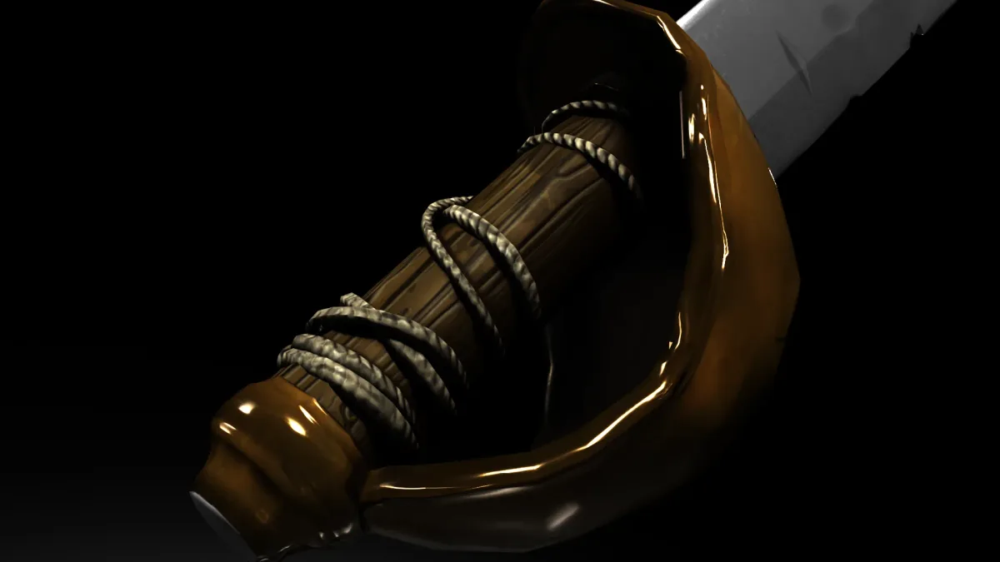

In pre-production
Project Darkwater
A free-to-play pirate MMORPG revival
A volunteer-run, non-profit revival of a now defunct MMORPG, set in a pirate world. The project began in April 2025 and has grown from five people to 21. The game is free to play and earns no revenue. I work across the design, art, and web sides of it.
- Genre
- MMORPG
- Team
- 21 volunteers
- My role
- Creative Lead, Game Designer, 3D Artist, VFX Artist, Web Developer